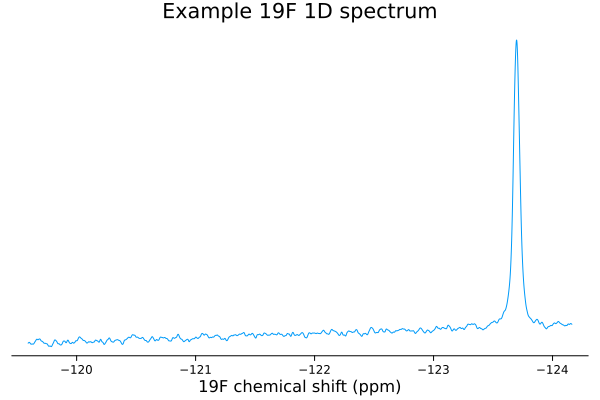
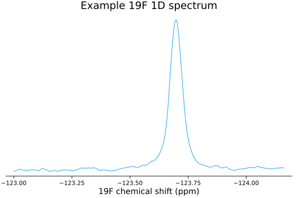
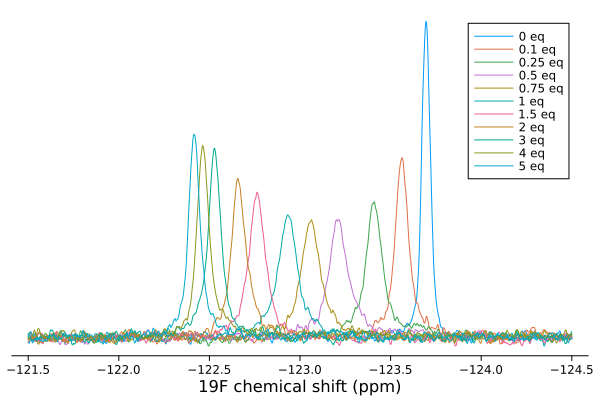
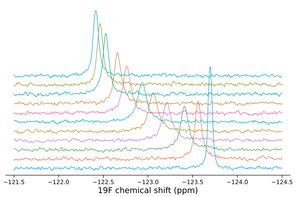
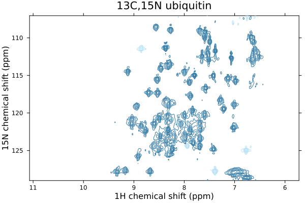
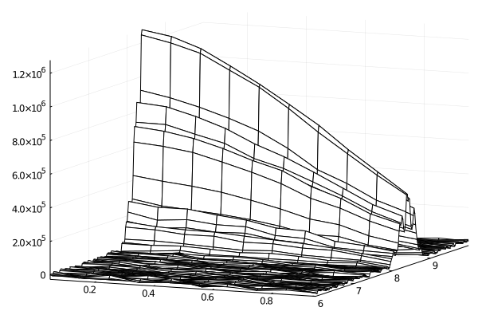
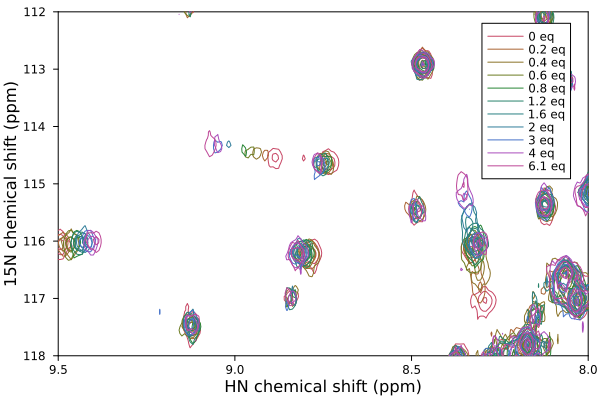

Examples
Loading and plotting a 1D spectrum
Load in some example data, in NMRPipe format
julia> using NMRTools, Plots;
julia> spec = loadnmr("../../exampledata/1D_19F/test.ft1")
NMRData (named 45 C) with dimensions:
X: -119.99959383646768:-0.0009143653407738972:-128.00029056823928
and data: 8751-element Array{Float64,1}
[-3741.88, -4000.97, -3816.28, -3438.31, -2960.06, -2279.44, -1297.88, -17.4062, 1441.69, 2952.72 … -17120.4, -15306.0, -12575.2, -9020.53, -5042.94, -1183.31, 2036.5, 4275.69, 5542.06, 5973.62]and then plot it
julia> plot(spec);
Zoom in on a particular region using a Between selector
julia> plot(spec[Between(-123,-124.5)]);
A quick look at spectrum metadata
Access metadata associated with the spectrum
julia> metadata(spec) |> keys
Base.KeySet for a Dict{Symbol,Any} with 23 entries. Keys:
:FDSIZE
:filename
:label
:ns
:NMRTools
:FDDIMORDER
:pulseprogram
:ndim
:acqusfilename
:title
:acqus
:FDTRANSPOSED
:FDMAGIC
:FDFLTFORMAT
:FDDIMCOUNT
:format
:noise
:FDFILECOUNT
:FDQUADFLAG
⋮
julia> metadata(spec, :pulseprogram)
"zg"
julia> metadata(spec, :ns)
64and with the X axis itself
julia> metadata(spec, X) |> keys
Base.KeySet for a Dict{Symbol,Any} with 39 entries. Keys:
:FDGOFF
:FDORIG
:label
:region
:sf
:FDAPOD
:swppm
:FDAPODCODE
:bf
:offsethz
:FDAPODQ3
:FDC1
:FDX1
:pseudodim
:offsetppm
:window
:FDFTSIZE
:FDCAR
:FDOBS
⋮
julia> metadata(spec, X, :label)
"19F"
julia> metadata(spec, X, :offsetppm)
-130.0This includes information on the window function, indicating in this case the line broadening applied (in Hz) and the acquisition time (in s)
julia> metadata(spec, X, :window)
ExponentialWindow(5.0, 3.744288662922463)Help is available on metadata entries
julia> metadatahelp(:sf)
"Carrier frequency, in MHz"
julia> metadata(spec, X, :sf)
470.5224736346634Acquisition parameters are easily accessible
julia> acqus(y, :P, 1)
ERROR: UndefVarError: y not defined
julia> acqus(y, :P)
ERROR: UndefVarError: y not defined
julia> acqus(y, :TE)
ERROR: UndefVarError: y not definedOverlaying multiple 1D spectra
Load and plot multiple 1D spectra from a list of filenames
julia> using NMRTools, Plots;
julia> filenames = ["../../exampledata/1D_19F_titration/2/test.ft1",
"../../exampledata/1D_19F_titration/3/test.ft1",
"../../exampledata/1D_19F_titration/4/test.ft1",
"../../exampledata/1D_19F_titration/5/test.ft1",
"../../exampledata/1D_19F_titration/6/test.ft1",
"../../exampledata/1D_19F_titration/7/test.ft1",
"../../exampledata/1D_19F_titration/8/test.ft1",
"../../exampledata/1D_19F_titration/9/test.ft1",
"../../exampledata/1D_19F_titration/10/test.ft1",
"../../exampledata/1D_19F_titration/11/test.ft1",
"../../exampledata/1D_19F_titration/12/test.ft1"];
julia> spectra = [loadnmr(filename) for filename in filenames];
julia> plot(spectra);
Legends are produced from the first line of the spectrum title file (which in this example is not particularly informative!). The legend can be disabled using the legend=nothing option. Stacked views can also be produced using the vstack=true option. By default, spectra are normalized according to the number of scans and receiver gain determined automatically from the spectrum metadata; this can be disabled with the normalize=false option
julia> plot(spectra, vstack=true, normalize=false, legend=nothing);
Loading and plotting a 2D spectrum
julia> using NMRTools, Plots;
julia> spec = loadnmr("../../exampledata/2D_HN/test.ft2")
NMRData (named 13C,15N ubiquitin, 500 uM in 10% D2O, 20 mM Pi pH 6.5, 277 K, SOFAST-HMQC) with dimensions:
X: 10.996211600312328:-0.00880440277744593:6.004115225500486
Y: 129.28353925538238:-0.08592607050940204:107.37239127548486
and data: 568×256 Array{Float64,2}
-48482.3 -38858.6 -19636.8 … 12674.1 17689.2 36429.1
-21781.6 -13882.9 7165.64 22943.2 19658.0 18966.0
-2235.85 -22999.6 -28895.1 2435.87 -1872.82 -8108.37
55572.6 4418.41 -41638.8 -8233.31 -18010.7 -52576.5
104261.0 51555.3 4752.79 -23935.9 -56254.4 -102548.0
53643.4 -1400.71 -20863.5 … -36914.7 -55343.3 -75291.0
8729.17 -56625.2 -65567.3 -16042.1 -46324.3 -54747.3
2486.17 -66226.5 -74482.0 2220.72 -31839.1 -49340.8
11527.9 -61726.7 -71447.4 -7509.31 -47429.0 -67566.6
26966.8 -35027.9 -54926.0 -8034.57 -51670.4 -69950.9
⋮ ⋱ ⋮
60358.5 29330.3 -30692.0 51720.8 35881.7 -21816.9
12926.2 10210.3 -18369.2 … 53658.1 44306.4 14400.5
17502.9 3148.91 -29604.1 24491.3 842.602 -14519.8
36419.7 37242.9 12087.4 -9027.8 -14825.2 -22491.4
11696.3 27564.5 37952.2 23497.8 7146.25 1990.99
-5144.73 -2173.76 15027.7 88485.5 51318.5 17126.7
12809.0 31002.3 35904.4 … 63698.1 49906.3 18292.2
48415.8 43271.5 18559.4 12762.7 -6167.26 -31759.4
27732.9 15702.3 -12022.1 27263.4 -3076.41 -23958.6
julia> contour(spec);
Accessing raw spectrum data
Spectrum data and associated axis information, metadata, etc, is encapsulated in an NMRData object. Raw arrays of data for the spectrum and axes can be obtained from this using data, xval and yval commands
julia> data(spec)
568×256 Array{Float64,2}:
-48482.3 -38858.6 -19636.8 … 12674.1 17689.2 36429.1
-21781.6 -13882.9 7165.64 22943.2 19658.0 18966.0
-2235.85 -22999.6 -28895.1 2435.87 -1872.82 -8108.37
55572.6 4418.41 -41638.8 -8233.31 -18010.7 -52576.5
104261.0 51555.3 4752.79 -23935.9 -56254.4 -102548.0
53643.4 -1400.71 -20863.5 … -36914.7 -55343.3 -75291.0
8729.17 -56625.2 -65567.3 -16042.1 -46324.3 -54747.3
2486.17 -66226.5 -74482.0 2220.72 -31839.1 -49340.8
11527.9 -61726.7 -71447.4 -7509.31 -47429.0 -67566.6
26966.8 -35027.9 -54926.0 -8034.57 -51670.4 -69950.9
⋮ ⋱ ⋮
60358.5 29330.3 -30692.0 51720.8 35881.7 -21816.9
12926.2 10210.3 -18369.2 … 53658.1 44306.4 14400.5
17502.9 3148.91 -29604.1 24491.3 842.602 -14519.8
36419.7 37242.9 12087.4 -9027.8 -14825.2 -22491.4
11696.3 27564.5 37952.2 23497.8 7146.25 1990.99
-5144.73 -2173.76 15027.7 88485.5 51318.5 17126.7
12809.0 31002.3 35904.4 … 63698.1 49906.3 18292.2
48415.8 43271.5 18559.4 12762.7 -6167.26 -31759.4
27732.9 15702.3 -12022.1 27263.4 -3076.41 -23958.6
julia> xval(spec)
10.996211600312328:-0.00880440277744593:6.004115225500486
julia> yval(spec)
129.28353925538238:-0.08592607050940204:107.37239127548486Overlaying multiple 2D spectra
Multiple 2D spectra can be loaded and overlaid in a similar manner to 1Ds
julia> using NMRTools, Plots;
julia> filenames = ["../../exampledata/2D_HN_titration/1/test.ft2",
"../../exampledata/2D_HN_titration/2/test.ft2",
"../../exampledata/2D_HN_titration/3/test.ft2",
"../../exampledata/2D_HN_titration/4/test.ft2",
"../../exampledata/2D_HN_titration/5/test.ft2",
"../../exampledata/2D_HN_titration/6/test.ft2",
"../../exampledata/2D_HN_titration/7/test.ft2",
"../../exampledata/2D_HN_titration/8/test.ft2",
"../../exampledata/2D_HN_titration/9/test.ft2",
"../../exampledata/2D_HN_titration/10/test.ft2",
"../../exampledata/2D_HN_titration/11/test.ft2"];
julia> spectra = [loadnmr(filename) for filename in filenames];
julia> contour(spectra);
[ Info: plotting vector of 2D NMR data
Adjust the plot limits with the usual xlims! and ylims! commands
julia> xlims!(8,9.5);
julia> ylims!(112,118);
Analysis of pseudo-2D diffusion data
Load in an example pseudo-2D dataset
julia> using NMRTools, Plots;
julia> spec = loadnmr("../../exampledata/pseudo2D_XSTE/test.ft1")
NMRData (named 15N aSyn, 283 K - XSTE) with dimensions:
X: 9.995628344572216:-0.019537033362537135:5.990536505252104
Time (type Ti): 1:10
and data: 206×10 Array{Float64,2}
8857.43 -1374.58 -6949.31 … -4677.19 7218.64 413.377
9781.6 7402.04 -5447.53 -6309.81 -2395.61 10868.6
2086.3 10641.5 2506.34 -9377.96 -10315.9 4679.06
2108.25 2228.66 9822.55 -7050.03 -10102.1 -1158.64
5606.88 6841.92 12287.7 5512.69 -8734.01 2887.35
21228.2 16153.0 11501.1 … 6149.16 -3481.64 8995.8
25140.6 4418.45 13012.9 222.17 287.508 11234.2
10052.4 -8331.94 9446.96 396.387 -1468.25 4079.05
11025.6 2707.95 6479.97 1507.52 -5400.82 -2416.04
19578.8 17276.1 10082.4 2017.4 -12062.8 3413.49
⋮ ⋱
-7971.29 -19061.4 -19841.7 304.821 3617.89 -1201.38
-8652.09 -19912.6 -15559.8 -12516.6 709.408 -2979.82
1954.35 -10313.4 -4737.17 -16085.1 1628.84 5320.82
13163.4 -5243.78 2828.3 … -12969.4 -2263.23 10011.7
4812.63 -3242.14 7904.76 -14238.3 -979.347 10291.9
-9071.11 562.927 6390.46 -9930.09 8688.26 593.572
-4401.11 -587.57 13969.4 -4511.07 10842.2 -11519.9
3996.99 -6124.45 19147.8 -10735.1 7666.19 -6288.3
-335.195 -7043.52 2518.17 … -13566.9 135.188 -5065.54As this is a pseudo-2D, set the values for this axis using settval. In this case, values are set to ten points equally spaced from 5% to 95%, representing the relative gradient strength used in the experiment
julia> spec = settval(spec, LinRange(0.05, 0.95, 10));
julia> wireframe(spec);
[ Info: plot recipe for pseudo2D data not yet defined
Fit the integral of signals from 7.5 to 9 ppm to the Stejskal-Tanner equation using fitdiffusion in order to determine the diffusion coefficient
julia> rH, D = fitdiffusion(spec, Between(7.5,9), T=283)
bounds: (6.919718355000003e7, 6.919718355000003e7)
bounds: (6.919718355000003e7, 6.919718355000003e7)
(34.88 ± 0.22, 4.525e-11 ± 2.8e-13, Plot{Plots.GRBackend() n=4})
An estimate of the hydrodynamic radius is determined based on the viscosity of pure water at the specified temperature (default 298 K). Default values for gradient pulse length, δ, and strength, Gmax, and the diffusion delay, Δ, can be altered using the full form of the command
fitdiffusion(spec, selector; δ=0.004, Δ=0.1, σ=0.9, Gmax=0.55, solvent=:h2o, T=298, showplot=true)Saving plots
All plots can be saved as high quality vector graphics, or as png files, using the savefig command
savefig("myspectrum.pdf")
savefig("myspectrum.svd")
savefig("myspectrum.png")